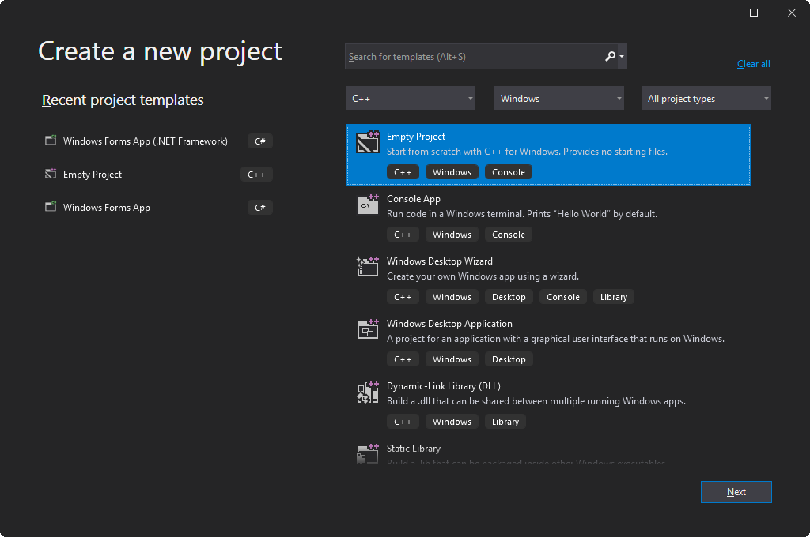
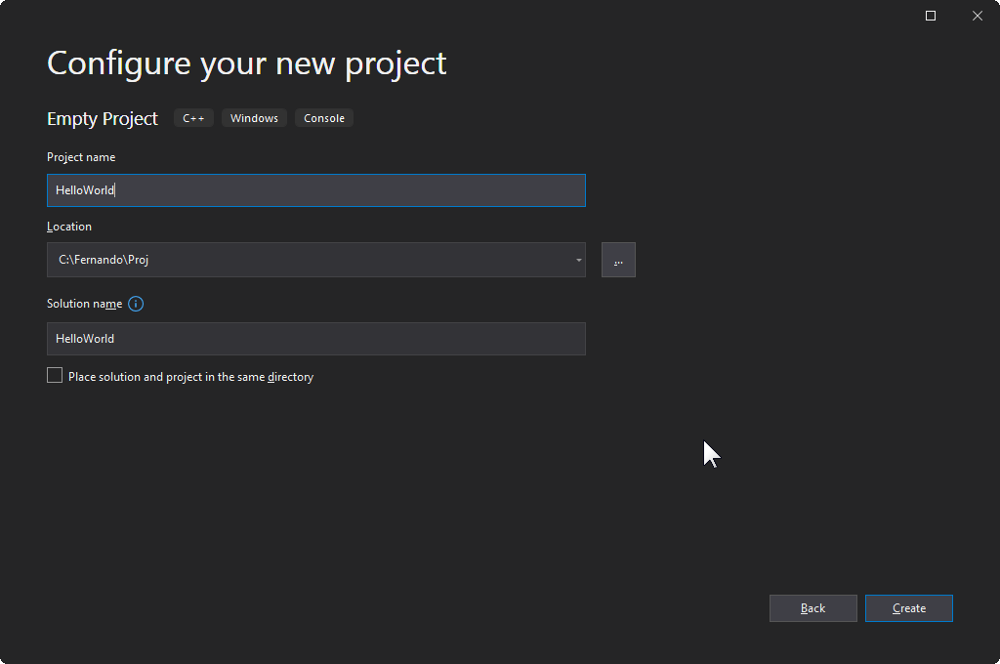
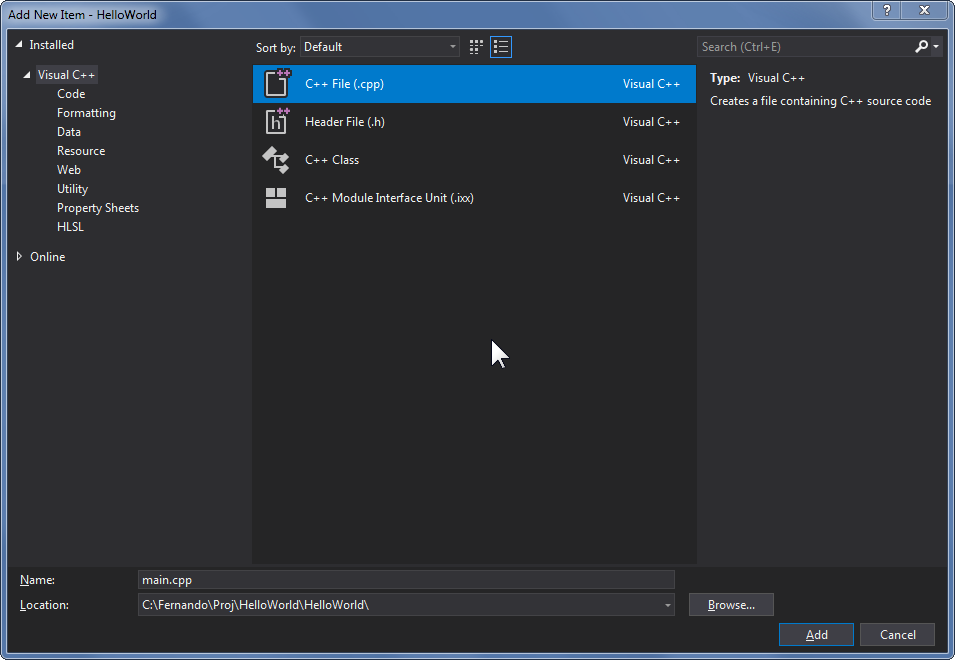
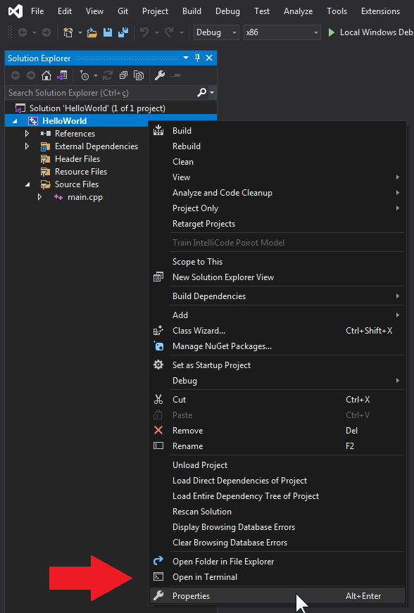
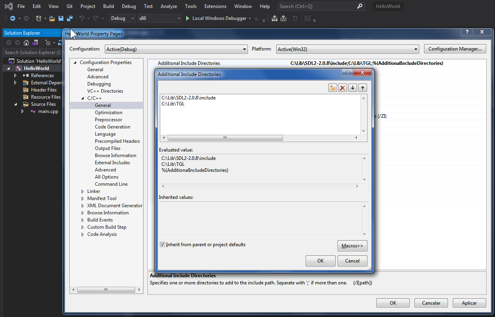
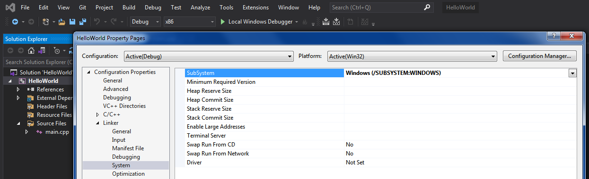
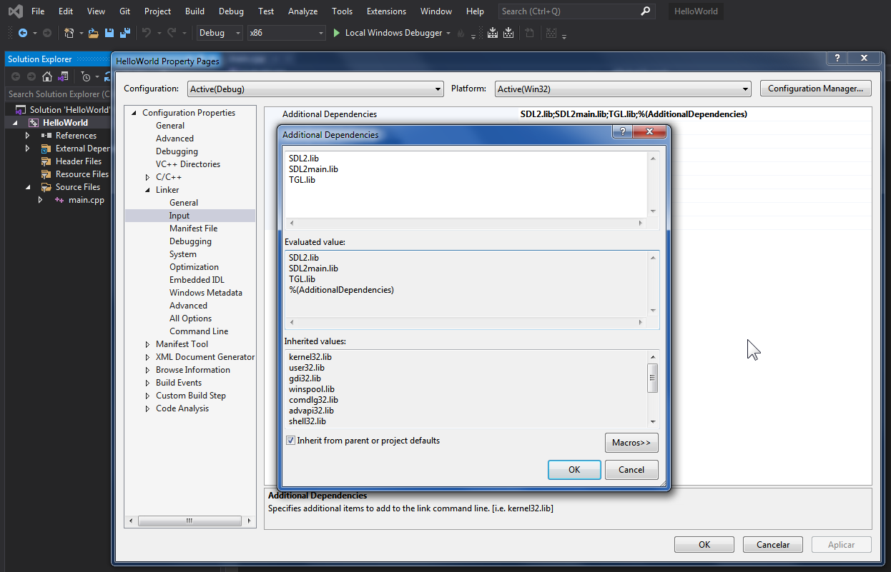
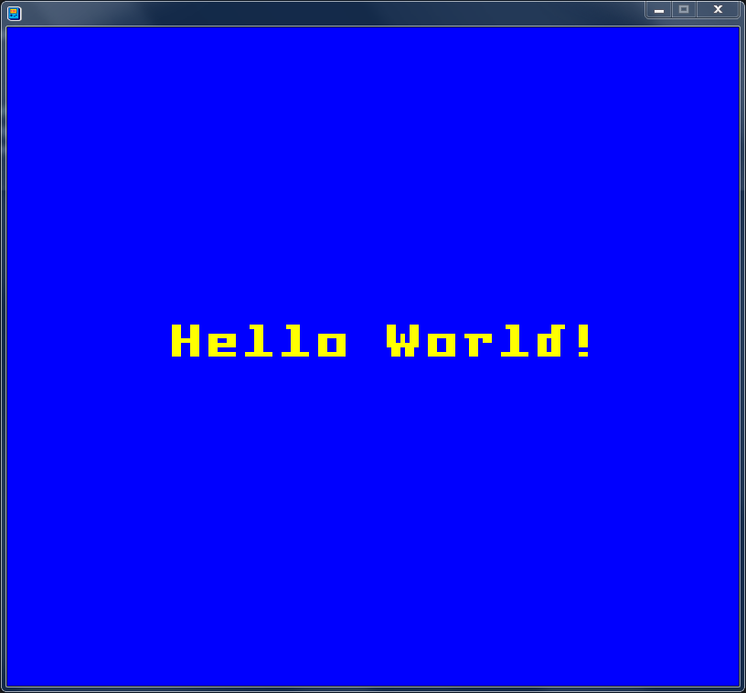

This page will guide you through the steps necessary to install TileGameLib in your local environment and show you how to start making games with it.
Note: This guide is for using the pre-built TGL library in your own projects. To build TGL in your own development environment you'll need to follow a different setup process which is not described in this page.
-
Visual Studio Community: If you don't have Visual Studio installed, you can click this link to download and install it for free. TGL has been tested on the Community Edition of VS 2019 and 2022, so it should at least work in either of those.
-
SDL 2: If you don't have the SDL 2 library installed, first you'll need to download and install it. TGL has been developed and tested only with SDL version 2.0.8. You can click this link to download it from the official SDL repository on GitHub. If this link is dead for some reason just remember you need to download specifically the SDL2-devel-2.0.8-VC.zip file, so you can search for this on Google and you should find it somewhere else. Extract the downloaded ZIP file into your preferred location. Upon extracting it you should see a folder named SDL2-2.0.8. SDL is now installed on your system. The path where you installed SDL will be referred to as SDL_PATH for the rest of this guide.
-
TileGameLib: Click this link to download the latest build of TileGameLib from the GitHub repository. Note that you need to download both files: TGL.h and TGL.lib. Then you can keep both of these files together in your preferred location. TGL is now installed on your system. The path where you installed TGL will be referred to as TGL_PATH for the rest of this guide.
-
Create a new empty C++ project in Visual Studio.

-
Enter a name for your project, for example "HelloWorld", and the path where it will be created, then click on the "Create" button.

-
Once created, right-click on the project in the "Solution Explorer" tool window on the left side of the IDE, then on the dropdown menu that appears, select "Add", then click on "New Item...". The "Add New Item" window will appear. Select "Visual C++" on the left panel, and "C++ File (.cpp)" on the right panel. Type "main.cpp" in the "Name" field on the bottom panel then click on "Add" to create the file.

-
Right-click again on the project in the "Solution Explorer", then click on "Properties".

-
On the left panel, expand the "C/C++" section and select "General". Now on the right panel, click on "Additional Include Directories". Add both directories where the header files for SDL and TGL are located. In the example screenshot below, the SDL_PATH is "C:\Lib\SDL2-2.0.8" and TGL_PATH is "C:\Lib\TGL". Remember, TGL_PATH and SDL_PATH refer to the root directories where you've installed the libraries, so you'll have to change both paths accordingly.

-
On the left panel, expand the "Linker" section and select "General". Now on the right panel, click on "Additional Library Directories". Add both directories where the binaries for SDL and TGL are located. The binaries are the ".lib" files. For SDL you need to include specifically the directory under "SDL_PATH\lib\x86". For TGL you need to include the same directory as the previous step (i.e. TGL_PATH).

-
On the left panel, still under the "Linker" section, select "Input". Now on the right panel, click on "Additional Dependencies". Add the SDL, SDLmain and TGL libraries as show in the screenshot below. Note that the order in which you include them is important, so SDL.lib should be first, then SDLmain.lib and last TGL.lib.

-
On the left panel, still under the "Linker" section, select "System". Now on the right panel, click on "SubSystem" and choose the option "Windows" in the dropdown menu of this option.
-
Click OK and the setup is finished! Now you can go ahead and create your first TGL app. Read the next section to create the typical "Hello World" program.
Now let me show you a simple program that prints "Hello World!" on a window using TGL, to demonstrate how easy it is. Copy the following code into your "main.cpp" file:
#include <TGL.h>
int main(int argc, char* argv[])
{
TGL tgl;
tgl.window_gbc(0xffffff, 4);
tgl.font_color(0x000000);
tgl.print_free("Hello World!", 35, 65);
return tgl.halt();
}
Now let's explain what happens in each line:
-
The TGL.h header file is included at the top.
-
Inside the main function, the first line creates the TGL singleton. This initializes the internal state of the library.
-
Next, the window_gbc() function opens the application window. The first argument is the background color (white in this case), and the second argument is the window size factor.
-
Next, the font_color() function sets the color of the following text (black in this case).
-
Next, the print_free() function draws the string "Hello World!" on the screen at the absolute x and y coordinates of 35 and 65 respectively. Note that since the color mode has not been defined using any of the "color_" functions, the text appears as black (i.e. the default).
-
Lastly, the halt() function stops execution of the program, but keeps the window open and refreshing automatically so that you can see the output. Closing the window will terminate the application.
Now just build your project and run. If everything is OK with your setup, you should see a window like this appear at the center of your screen:

Back to Home